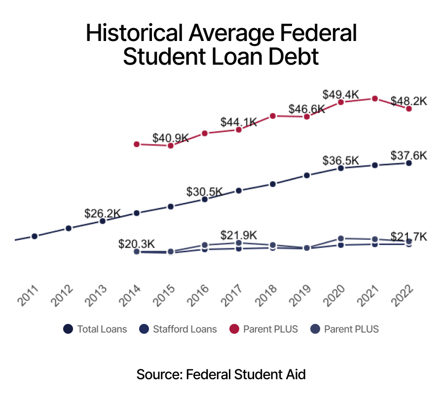
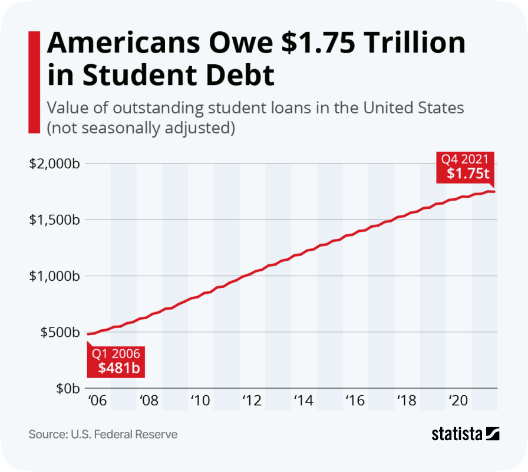
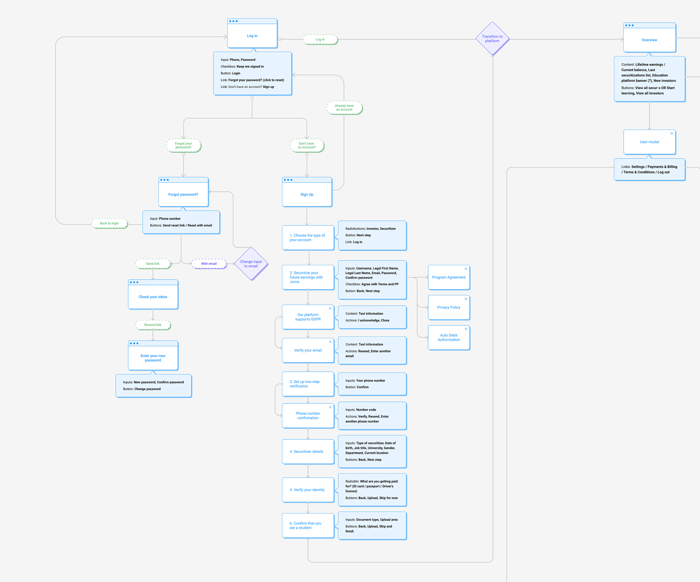
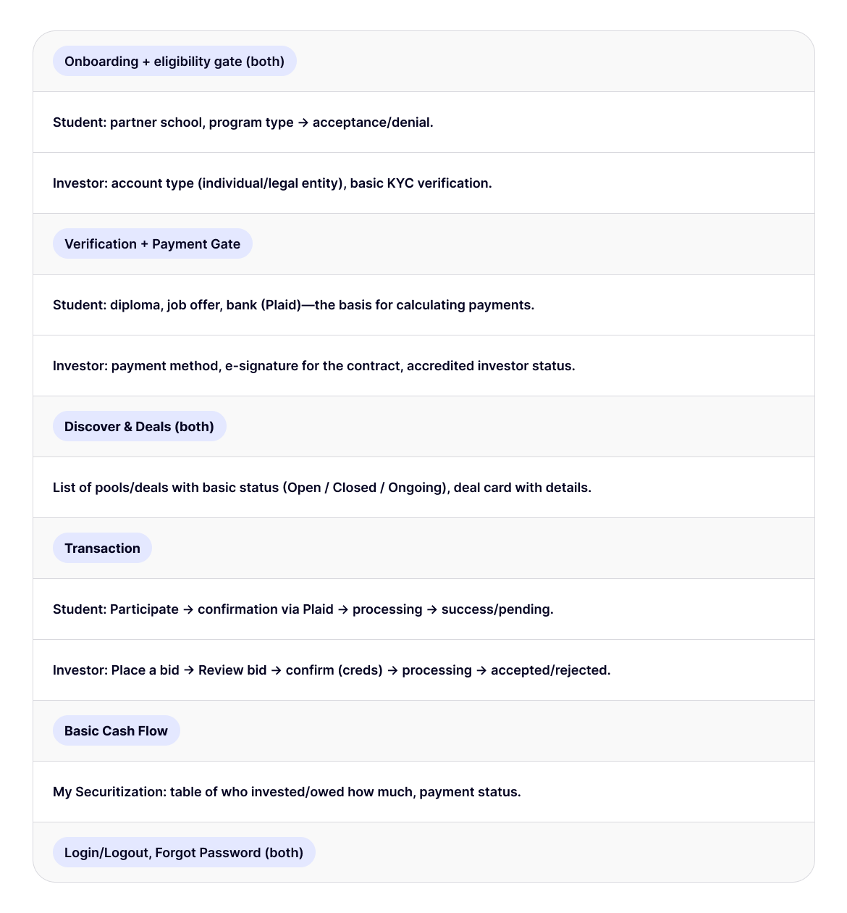
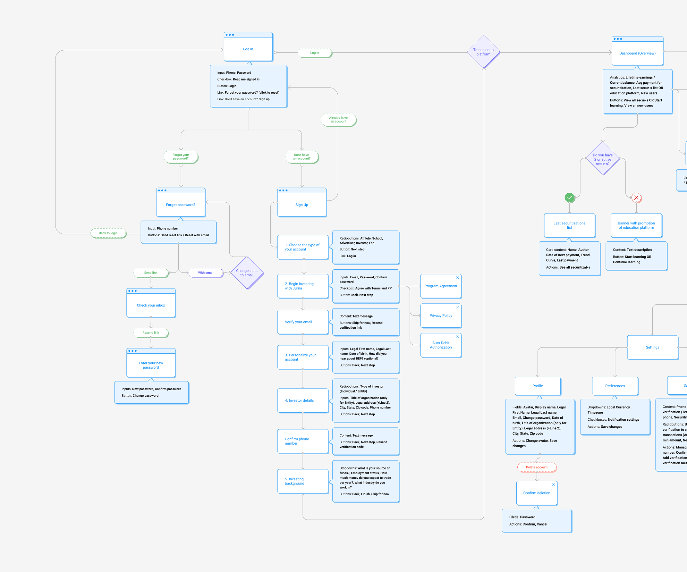

Research & Mapping
Since the platform is two-sided, I built a detailed User Flow for two completely different segments: students seeking funding and investors managing a portfolio.
A comprehensive health operating system designed to streamline healthcare workflows and patient management.
Initially envisioned as a broad social network for students, Jurna strategically pivoted to focus entirely on its core value: a FinTech investment and securitization platform. Designing this MVP was an exciting challenge that required balancing a seamless user experience with strict legal, financial, and security constraints.
Senior Product Designer
I was responsible for designing the platform's interface from scratch to the MVP stage.
Successfully designed and launched a complex MVP for an investment platform, solving the problem of the "difficult entry barrier" to investing. The interface successfully transformed the complex concept of lending (ISA) into a transparent and understandable bridge between investors and students.


In the US, 44 million borrowers are burdened with $1.75 trillion in student debt, and investors lack a simple and transparent tool for investing in their futures.
* based on sources U.S. Federal Reserve by Statista, Federal Student Aid, 2020-2023
Instead of building another standard loan app, we made a strategic bet on the ISA model. Our core hypothesis was:
Since the platform is two-sided, I built a detailed User Flow for two completely different segments: students seeking funding and investors managing a portfolio.
The ISA model is legally complex. I translated boring financial terms into a step-by-step, transparent in-app investing process to lower the barrier to entry for users.
We cut off the unnecessary stuff and focused on key modules: onboarding, dashboard with student search, transaction flow and portfolio management.
Designing for FinTech requires more than just user interviews. I collaborated closely with stakeholders and legal experts to decode heavy financial frameworks — like securitization and Dutch/English auctions. This ensured our UX was not only user-friendly but strictly compliant with legal constraints.
I mapped and designed two distinct, synchronized flows for students and investors from scratch. To launch faster and validate the business model, we made a strategic decision: instead of engineering complex direct 1-to-1 investments, I designed a "Student Pool" system. In the MVP, these pools are curated manually, but the UX architecture is fully prepared for future automation.
When the platform's core concept shifted midway, I had to completely redesign key experiences. Rather than starting from scratch and delaying development, I strategically leveraged our previously established UI/UX patterns to build out the new investment pages, ensuring a seamless transition and maintaining a fast delivery pace.

User journey mapping and ecosystem flow

Financial mechanics and loan securitization wireframes

MVP scope definition and feature mapping
Instead of just building separate pages, I focused on creating a synchronized, transparent experience for both user segments while keeping complex financial mechanics under the hood.
I mapped and designed parallel experiences for students and investors. The student dashboard focuses on applying for securitizations, tracking job offers, and monitoring cash flow. The investor side mirrors this logic but is tailored to portfolio management, risk evaluation, and browsing available pools.
Following a strategic pivot from the CEO to remove direct communication between investors and students, the UI needed to bridge this gap. I engineered a robust component system for the "Securitization Cards." Using Figma variants, I designed 29 dynamic states (16 for students, 13 for investors) that automatically adjust based on variables, pool status, and individual user permissions.

To increase the percentage of successfully disbursed loans, the UX had to build absolute trust. I integrated seamless KYC (Know Your Customer) compliance checks, document uploads, and bank connections directly into the onboarding flow. Additionally, automated payment calculations tied to job offers empowered both sides to independently evaluate risks before committing.
Lowered the barrier to entry for unqualified investors by translating the complex legal ISA model into a simple, step-by-step flow.
We've ensured data transparency by visualizing complex financial statistics in dashboards.
Designed and successfully launched a complex, two-sided platform (for investors and students) from scratch (Zero to One).
Key takeaways from designing Jurna's investment platform:
Midway through, we faced an unexpected paradigm shift that turned the platform's core goals upside down. I learned how to quickly adapt and rework the design architecture while preserving the foundational relationship between the student, platform, and investor. It proved the immense value of stakeholders who are willing to change course rather than just "going with the flow."
Being the sole designer on the project meant I couldn't just draw screens, I had to lead the design communication. With development starting just a month after the design phase, I focused heavily on prescribing clear guidelines and keeping developers, managers, and the CEO aligned to ensure our vision was implemented smoothly.
To design a compliant and secure product, I had to dive deep into the legal and financial side — from understanding Dutch and English auctions to navigating data privacy laws. Balancing a seamless UX with these strict boundaries was a massive challenge, but it proved to me that finance is definitely not boring :)